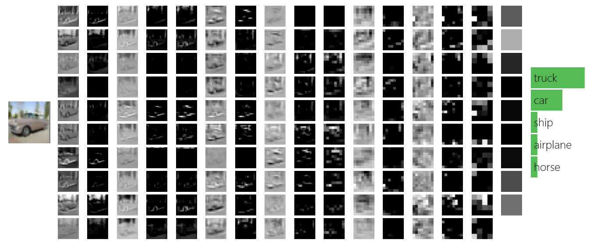
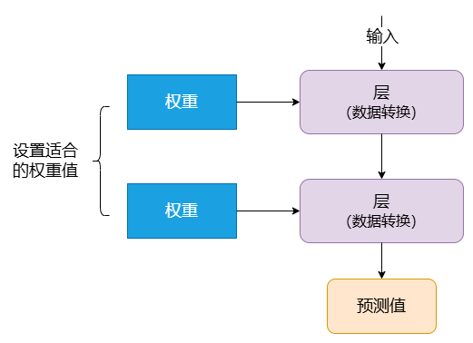
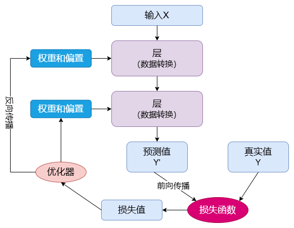
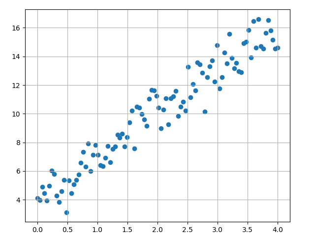
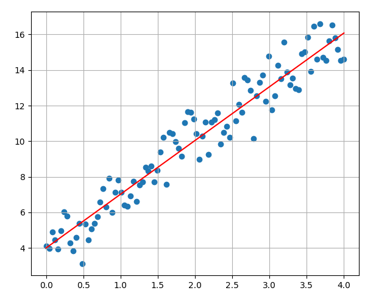
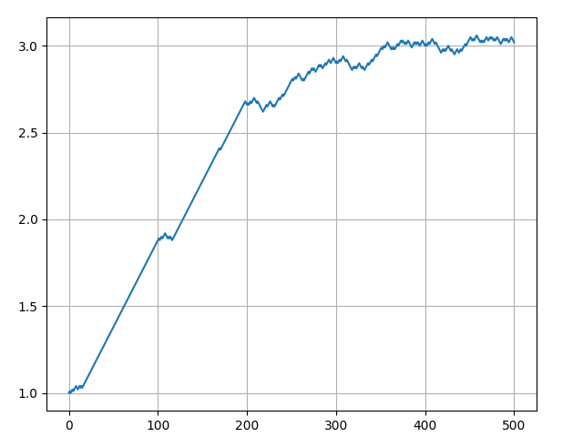
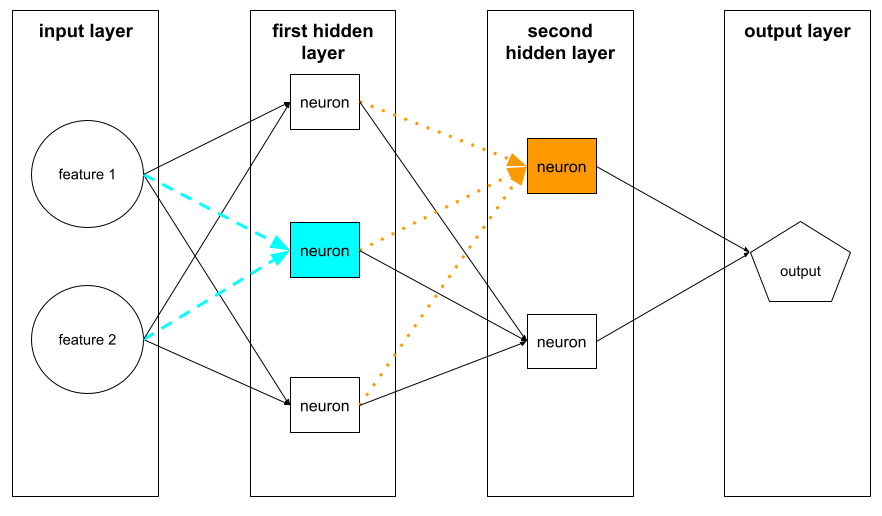

1.3 深度学习原理
理解神经网络以及它的运行原理！
创建日期: 2024-04-01
深度学习是机器学习的一种方法，通过模拟神经网络的层次结构来自动从数据中学习特征表示。神经网络的训练依赖于权重的调整，通过前向传播和反向传播算法来优化参数。前向传播计算模型输出，反向传播计算损失并调整权重，以最小化误差。通过多次迭代训练，神经网络能够从大量数据中提取复杂的模式，广泛应用于图像、语音、自然语言处理等领域。
1.3.1 概念
程序员通过编写规则（计算机程序）的方式让计算机做有用的工作，它将输入的数据变成人们期望的回答。机器学习将这个过程反过来，它通过观察输入数据和对应的回答，来理解规则是什么。
深度学习是一种从数据中学习表示的新方法，其强调学习连续的、越来越有意义的层。深度并不是指通过这种方法实现任何更深层次的理解，而是指连续层的概念。
深度学习算法学习到的表示是什么样子的？可以将人工神经网络视为一个多阶段信息蒸馏的过程，其中的信息经过连续的过滤，最终变得越来越纯净。如下所示，就是神经网络的推理过程，左侧输入一辆卡车，经过中间变换后，输出它的类别 "truck" ：

图片来源于 CS231 课程 动画截图，一个小型神经网络直接跑在浏览器上，左侧是用户输入的图片，经过不断地计算（中间每一列就是一个层），右侧最终输出图片所属的类别。
1.3.2 神经网络原理
层对输入数据的操作存储在 权重 (Weight) 中，权重本质上是一对数字。从技术上来说，权重更新就是层的转换（权重有时也称为层的参数）。在此情况下， 学习意味着为网络中的所有层找到其权重值，以便网络能够正确地将输入数据映射到其目标中。

但问题是深度神经网络可以包含数千万个数据，找到所有参数的正确值似乎是一项艰巨的任务，尤其是考虑到修改一个参数会影响到所有其它参数。
为了控制神经网络的输出，需要知道输出和期望之间的距离，神经网络的 损失函数 (Loss Function) 可以做到。损失函数拿到网络的预测和目标进行对比，得到一个分数，这个分数就是网络对于特定示例的表现。
深度学习的基础技巧就是利用这个分数作为反馈信号，来调整权重值。对于当前输入数据来说，就是通过稍微改变权重值，降低损失分数。调整是通过 优化器 (Optimizer) 进行的，它实现了 反向传播算法 (Backpropagation Algorithm) ：它是深度学习的核心。
网络的权重使用随机值进行初始化，因为网络进行一系列的随机变换，它的结果和预期会差距很远，损失得分非常高。但是随着网络不断地处理输入数据，权重在不断地朝着正确的方向前进，损失分数不断降低。

这就是 循环训练 (Training Loop) ，它会重复足够多次，直到损失函数最小。对于拥有最小损失的网络就是已经训练好的网络。机制虽然简单，但是将它的规模放大，就会产生神奇的效果。
1.3.3 示例
介绍完神经网络的原理后，我们可以来看一个非常简单的示例。就是找到一些随机分布点的最佳拟合曲线。文件 绘制点的分布，如下图所示：
rng = numpy.random.default_rng(seed=0)
random_numbers = rng.standard_normal(size=100)
input = numpy.linspace(0, 4, 100)
y_true = numpy.round(3 * input + 4 + random_numbers, 4)
使用传统方法，计算每个点到直线的距离，转换为关于斜率的函数，求取函数最小值，就能得到拟合直线。但是该计算过程复杂，我们可以使用深度学习找到近似直线。采用如下的步骤：
设定曲线为 \(y = param * x + 4\) ，param 的初始值为 1.0 ；
对于每个输入点 \((x,y)\) ，x 代入 \(y =param * x + 4\) ，计算得到预测值 \(y'\) ；
将 \(y'\) 与实际值 \(y\) 进行比较，如果 \(y'\) > \(y\) ，那么
param = param - 0.01；如果 \(y' \lt y\) ，那么param = param + 0.01；重复过程 2 和 3，直到 param 趋于稳定（可以将随机点遍历多个回合）。
将上述过程转换为可执行的代码：
param = 1
step = 0.01
epochs = 5
intermediate_list = [1.0]
for _ in range(epochs):
for index, x in enumerate(input):
y_pred = numpy.round(param * x + 4, 4)
if y_pred < y_true[index]:
param += step
else:
param -= step
intermediate_list.append(param)最终计算出来的 param 值为 3.02 ，绘制的图像如下图所示：

可以通过下图看到整个过程中斜率的变换情况，当斜率达到 3 之后，逐步趋于稳定。训练过程中，我们可以根据此信号来判断是否结束训练。

1.3.4 神经网络
首先需要讨论 神经元 (Neuron) ，它是神经网络的基本单位。神经元接受输入，对其进行一些数学运算，然后产生一个输出。以下是一个神经元有两个输入的样子：

在这个神经元中有三种计算：
每个输入乘以权重（红色表示）；
乘以权重后的输入和偏置（绿色表示）相加；
相加得到的和通过激活函数（黄色表示）。
\(x_1 \rightarrow x_1 \cdot w_1, x_2 \rightarrow x_2 \cdot w_2\)
\((x_1 \cdot w_1) + (x_2 \cdot w_2) + b\)
\(y = f((x_1 \cdot w_1) + (x_2 \cdot w_2) + b)\)
每个神经元都会执行以下两个步骤：
计算输入值乘以对应权重的加权和。
将加权和作为输入传递给激活函数。
激活函数 (Activation Function) 的作用就是将一个无界的输入转换为一个具有良好、可预测形式的输出。
如下就是由神经元构成的神经网络，第一个隐藏层中的神经元接受来自输入层中特征值的输入。第一个隐藏层以外的任何隐藏层中的神经元都会接受来自前一隐藏层中的神经元的输入。例如，第二个隐藏层中的神经元接受来自第一个隐藏层中的神经元的输入。

1.3.5 训练
神经网络的训练主要包含如下五个步骤：
初始化权重：将网络的权重和偏置随机初始化。
前向传播：计算网络输出。
计算损失：根据预测值和实际值计算损失。
反向传播：计算梯度并更新权重。
迭代：重复前向传播、计算损失、反向传播，直到损失收敛或达到设定的训练轮数。
1.3.5.1 前向传播
前向传播是将输入数据经过网络的计算过程。其步骤如下：
输入数据从输入层进入。
数据逐层向前传播，每层节点接收上一层节点的输出，通过权重和激活函数转换后，再传递到下一层。
到达输出层时，得到模型的预测结果。
通过前向传播，可以得到模型在当前参数下的输出，但该输出结果通常与实际值有误差，因此需要调整模型参数以改进结果。
1.3.5.2 反向传播
反向传播用于计算损失函数对权重的梯度。具体步骤如下：
计算损失函数相对于输出层的梯度，得到每个参数的影响程度。
利用链式法则将误差反向传播到各层，逐层计算每个权重的梯度。
基于这些梯度，更新每个权重，以减小损失函数值。
梯度下降是一种优化算法，用于通过迭代调整模型参数，找到函数的最小值。它是机器学习和深度学习模型训练中最重要的优化方法之一。其核心思想是沿着函数梯度下降的方向更新权重，每次向着梯度的反方向迈进一步，逐步靠近函数的最小值。